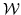

Let
 be the training text list of words
and let
 be the set of all words in
.
From equation
14.1 it follows that:
be the set of all words in
.
From equation
14.1 it follows that:
In general evaluating equation 14.9 will lead to problematically small values, so logarithms can be used:
Given the definition of a class  -gram model in equation
14.8, the maximum likelihood bigram
probability estimate of a word is:
-gram model in equation
14.8, the maximum likelihood bigram
probability estimate of a word is:
Substituting equation 14.11 into equation 14.10
and then rearranging gives:
Note that the first of these three terms in the final stage of equation
14.12, ``
'', is
independent of the class map function , therefore it is not
necessary to consider it when optimising . The value a class
map must seek to maximise,
 , can now be defined:
, can now be defined:
A fixed number of classes must be decided before running the algorithm, which can now be formally defined:
The initialisation scheme given here in step 1 represents a word unigram language model, making no assumptions about which words should belong in which class.14.9 The algorithm is greedy and so can get stuck in a local maximum and is therefore not guaranteed to find the optimal class map for the training text. The algorithm is rarely run until total convergence, however, and it is found in practice that an extra iteration can compensate for even a deliberately poor choice of initialisation.
The above algorithm requires the number of classes to be fixed before running. It should be noted that as the number of classes utilised increases so the overall likelihood of the training text will tend tend towards that of the word model.14.10 This is why the algorithm does not itself modify the number of classes, otherwise it would naïvely converge on classes.